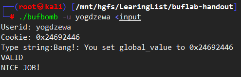
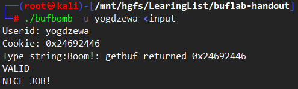

buflab
不可视境界线最后变动于：2022年5月7日 晚上
bufLab
ctf pwn buffer overflow基础入门题目.
level0
由于bufbomb没有开PIE, 所以smoke的地址是固定的, 只要覆盖返回地址就行.
smoke() address: 0x08048E0A

getbuf没有开canary, 所以填充完0x28字节+8bytes rbp+0x08048E0A即可.
然后突然发现末尾有个0a, 于是换成10, 也就是smoke第三条指令的位置, 跳过了开辟占空间的过程不过这函数直接退出也没啥关系.

1 | |
level1
要调用fizz函数, 参数要等于cookie = 0x24692446.
所以gefbuf返回后跳到fizz, 栈底是返回地址, 再往下是第一个参数.
1 | |

level2
shellcode注入, 放到栈上执行, 需要修改一个bss段的全局变量. 如图: 
在地址0x0804D10C处. 栈的基地址是根据cookie来确定的, 不过在每次运行中都不会变.
bang() address: 0x08048D52, getbuf stack frame base: ebp -> 0x55683c60, getbuf’s buf: ebp-0x28=0x55683C38
1 | |
完成.
level3
getbuf stack frame base: ebp -> 0x55683c60, getbuf’s buf: ebp-0x28=0x55683C38
在getbuf返回的时候跳转到shellcode, 修改eax为cookie. 这个时候如果要执行ret指令, 必须先在栈上压入原先的返回地址, 即0x08048E50, 这样就行了. 如果直接使用间接跳转都不用压入这个.
不过这样在返回test的时候ebp被破坏了, 不过反正栈没有变化, gdb查得值为0x55683c90
1 | |
完成.
level4
简单来说就是调用一个新函数getbufn(), 其中buf有520字节, 不过由于调用之前会随机在栈上分配一些空间, 所以ebp的值会发生改变, 为±240. 所以在五次运行期间要保证getbufn跳转到合适的位置.
所以直接使用nop sled技术.
getbuf stack frame base: ebp -> 0x55683c60, 最多减去240, 即0x55683B70
由于要返回到testn且多次执行, 这样ebp必须保证其不被破坏, 方法是利用esp和ebp的关系来在shellcode计算出来.
从getbufn返回的时候esp是testn的栈顶. 而testn的esp和ebp的关系是ebp = esp + 0x28.

1 | |
完成.

总结
这次实验引导如何利用缓冲区存在的漏洞实现一些目的：
- Level0：利用直接覆盖返回地址，在调用函数getbuf时直接返回smoke函数，让我们初步认识缓冲区溢出攻击的原理。
- Level1：在Level0的基础上，多了修改函数参数的操作，这需要我们结合汇编代码找到参数的位置。
- Level2：开始需要我们自己编写汇编代码段去实现操作：修改返回值、设置全局变量、跳转。同时也需要利用缓冲区溢出，跳转至这段代码的起始地址。
- Level3：同时利用自己编写的代码设置返回值并返回至test函数，需要覆盖buf时要保持函数保存的旧ebp不变。
- Level4：每次调用getbufn的目的与Level3一致，不同的是它的ebp不断变化，需要找到等式关系去编写代码以修正而ebp。而多次调用使栈基址随机化，这需要利用nop_sled的技术。
总的来说比较基础, 我用的是ctf的工具来写要输入的字节序列. 再结合一些命令行操作可以快速完成本次实验.